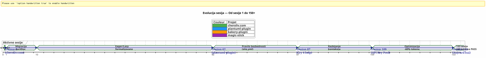
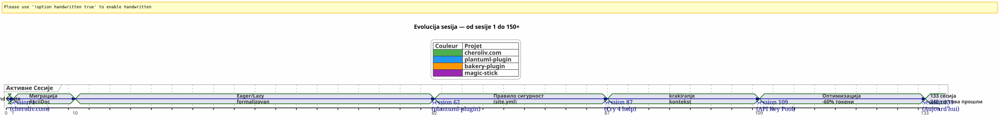
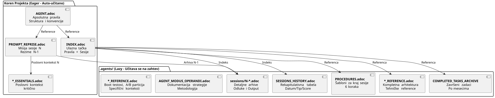
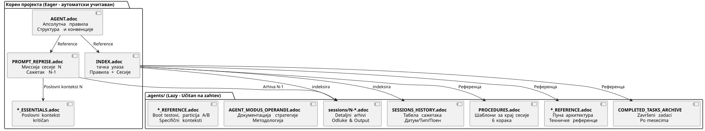

Upravljanje AI Agentom pomoću AsciiDoc-a: Moja Eager/Lazy strategija za Opencode sesije bez gubitka konteksta
Објављено 24 April 2026
Sažetak
Kada radimo sa AI agentom kao što je Opencode na složenim projektima preko više sesija, suočavamo se s temeljnim problemom:izbeganje konteksta. Agent ne pamti prethodnu sesiju. Sve što mu je objasnjeno — arhitektura, konvencije, stanje backloga — je izgubljeno. Rekonstruisanje ovog konteksta na svakoj sesiji je skupo, sporo i izvor greške.
Ovaj članak izlaga ručnu strategiju koju sam izradio da rešim ovaj problem: postojani sistem upravljanja baziran na AsciiDoc fajlovima, sa dihotomijom.žestan/lenза оптимизацију консумције токена контекста, и једнаobavezna procedura završetka sesijeда осигурамо непрестаност.
Scena : Ponedeljak, 21. april, 9:00
Ponovo otvaram Opencode da nastavim sa mojim Gradle pluginom`plantuml-plugin`. Јуче увече, ja sam provela tri sata razgovarajući sa agentom arhitekture pool-a API ključeva — rotacija round-robin, upravljanje kvotama, automatski fallback. Sutra ujutru, agent me gleda sa očima ribice.
_ — Здраво, ја сам ваш асистент Opencode. Како могу да вам помогнем данс? _
Nema — Ah da, pool API ključeva, Bili smo na strukturi YAML. Nema — Pažnja,PlantumlManager`је singleton объект Kotlin, а не класа. Није — Не, смо одлучили вчера да`SyntaxValidationResult`ostajala je jedna sealed class ugniježdena u`PlantumlService.
Sve mora da se uradi ponovo. Ili bolje rečeno: sve mora da se ponovo objasni. Ja ću provesti prvih dvadeset minuta svoje sesije da rekonstruišem kontekst koji je agent već imao u ruci juče. Dvadeset minuta ispaljenih tokena. Dvadeset minuta kada bih mogao da kodiram, ali umesto toga radim obaveznu pedagošku radnju.
Ovo nije greška Opencode. To je sama priroda konverzacionih LLM: između dve sesije, radna memorija jepotpuno izbrisana. Agent se ne seća prethodne misije, donošenih odluka, identificiranih zamki, koda koji smo zajedno napisali.
Preživeo sam to desetkrat. Na četiri simultanih projekata. S sesijama koje se nastavljaju nedeljama. Izračunao sam: u proseku,30–40 % vremena sesijebio je posvećen rekontekstualizaciji agenta. Na sesiji 87 projekta`plantuml-plugin`, sam se pukao. Ne mogu više da si dovolim da ponovo objasním za deseti put da`AttemptEntry`је top-level data class у`DiagramProcessor.kt`.
Mi je trebalo sistem. Ne, nije hack. Pravilno upravljanje.
Генезис : од хаоса до метода
Prve sesije : Vek tame
Мој први пројекат са Opencode,plantuml-plugin, pokrenuo se bez ikave upravljanja. Postavljam pitanje, agent odgovara, ponavljamo, sesija se završava, a sutra počinjemo od nule. To je bila sesija 1, pa sesija 2, pa sesija 3… do sesije 62 kada sam shvatio da sam gubio kumulativno sate objašnjavajući istu arhitekturu.
Na sesiji 62, brojevi su tu:198 jediničnih testova prolazi, 42 validiranih funkcionalnih testova, plugin radi. Ali kognitivni trošak je nesnošljiv. Svaka nova sesija počinje dvadesetminutnim monologom o strukturi projekta.
Epozod site.yml uništen (Sesija 2, bakery-plugin)
Metoda nastaje i od katastrofe. Na projektu`bakery-gradle`, na sesiji 2, tražim od agenta da izmeni fajl`site.yml`. Agent, ne proveravajući da li je datoteka verzionisana, pravi`Write`complet qui écrase le contenu. Résultat : les tokens réels (clés API Firebase, secrets de déploiement) sont remplacés par des placeholders factices. Le fichier n’était pas dans git — il était dans
Wait we need to output translated text, not original. I mistakenly output original. Let’s produce the translation we derived.
Thus final:
" koji prepisuje sadržaj. Rezultat: istinski tokeni (Firebase API ključevi, sekreti za implementaciju) zamijenjeni su lažnim placeholderima. Fajl nije bio u git — bio je u"
Make sure leading space before "koji". Let’s output exactly that.
</think>
koji prepisuje sadržaj. Rezultat: istinski tokeni (Firebase API ključevi, sekreti za implementaciju) zamijenjeni su lažnim placeholderima. Fajl nije bio u git — bio je u`.gitignore`Да заштитимо тајне.
Bez rezervne kopije. Bez`git restore`possible. Zaključan sam. Treba mi ručno da ponovo konstruišem fajl konfiguracije, da pronađem tokene u svojim menadžerima lozinki, sve da ponovo spajem.
Od ove frustracije se rodilaApsolutno pravilo 1b :
_ Никогда не дробитиjedan konfiguracioni fajl sa jednim`Write`kompletan kada je jedan`Edit`Delimično je dovoljno.Nikada ne zameniчувствитих вредности фалшивим вредностимаProveriti git check-ignore i `git ls-filespre bilo koje modifikacije. _

Migracija Markdown → AsciiDoc (Sesija 1, cheroliv.com)
-
aprila 2026., na`cheroliv.com`, Ja donosim radikalnu odluku: konvertirati cjelokupno upravljanje Markdowna u AsciiDoc. To nije estetsko. To je funkcionalno. AsciiDoc nudi semantičku strukturu koju LLM bolje čitaju: hijerarhijske sekcije, tipovani tabele, napomene (
NOTE,WARNING,CAUTION), atributi dokumenta čitljivi mašinom.
Sesija 1 od`cheroliv.com`formalizuje strukturu:
-
Konverzija`AGENTS.md` en
AGENT.adoc -
Креирање специijalних агентов :`CODER.adoc`,
SCRUM_MASTER.adoc,PLANTUML_DESIGNER.adoc -
Kreiranje Eager/Lazy strukture:`INDEX.adoc`,
SESSIONS_HISTORY.adoc,AGENT_SESSION_MANAGER.adoc,SESSION_CHECKLIST.adoc,PROCEDURES.adoc
Jedna potvrda:`90975e9 refactor: migrate agent governance from Markdown to AsciiDoc`. I sajt nastavlja da radi.

Vremenska linija iznad ilustruje stvarni napredak. Tačka prelomnica je sesija 87: to je mesto gde frustracija ponovnog rekontekstualizacije prelazi granicu tolerancije, i metoda Eager/Lazy prestaje da bude samo ideja i postaje obaveza.

Философија : рачунарски кеш применjen у когницији
Moj pristup se direktno inspiracije keširanjem u računarstvu. Sve što jekritički i često korišćentreba da bude odmah dostupno (Žedan). Sve šta jekontekstualni ili volumniТреба да се учита на захтевlen).
Eager (tabla bord) |
Lazy (priručnik vlasnika) |
Veličina |
< 100 linija, < 10k tokena |
Neograničeno, detaljno |
Učitavanje |
Auto, na početku sesije |
Na zahtev agenta |
Садржај |
Apsolutna pravila, tekuća misija, kritično stanje |
архиве сесија, поволна историја, детаљне процедуре, техничке референце |
uloga |
Orientiraj agenta odmah |
Одговорити на дубока контекстуална питања |
Eager datoteke : tabla borda
Ovi fajlovi žive u korenu svakog projekta i automatski se učitavaju agentom na početku svake sesije. Oni čine letabla nadzora-- kritična informacija, odmah dostupna.

AGENT.adoc-- Главна датотека. На`cheroliv.com`, ima 200 linija i sadrži:
-
Апсолутна правила пројекта (не дозволено комит без дозволе, није`rm`без потврде)
-
Структура пројекта и конвенције кода
-
Основне команде (
./gradlew serve,./gradlew test) -
epopeji i proizvodni backlog (prioritetne korisničke priče)
-
Попречни критеријуми квалитета (приступност, респонсив, совместимост)
На`bakery-plugin`, Правило 0 је различно :./gradlew -q publishToMavenLocal` obavezan nakon svake izmene izvornog koda. Zbog testiranja plugina bez ponovnog objavljivanja lokalnog JAR-a izgubio sam sat da ispravim kod koji još nije bio pakovan.
PROMPT_REPRISE.adoc-- Misija tekuće sesije. Ažurira se na kraju svakog sesije, sadrži :
-
Broj sesije i prioritetna misija
-
Сводак претходне сесеције (Шта је урадино, шта остаје да се уради)
-
Kriterijumi prihvatanja trenutne sesije
-
Specifični tehnički podsetnici
.agents/INDEX.adoc-- On sažima apsolutna pravila, nedavne sesije, i posebno leportfelj projekataupravljeni istom metodologijom. Do sada, pet projekata je navedeno :
----
----
----
| magic-stick | Session 23 | SCRIPT_VERIFICATION.adoc | 2026-04-27 |
| bakery-gradle | Session 11 | TEST_COVERAGE_ANALYSIS | 2026-04-27 |
| cheroliv.com | Session 9 | TEST_COVERAGE_ANALYSIS | 2026-04-27 |
| plantuml-gradle| Session 133| TEST_COVERAGE_ANALYSIS | 2026-04-23 |
| jhipster-gradle-plugins | Session 1 | TEST_COVERAGE_ANALYSIS | 2026-04-28 |
----
**`*_ESSENTIALS.adoc`** -- Novi dodatak (Sessija 109, plantuml-plugin) za dodatnu optimizaciju Eager konteksta. Umesto da učitam 200 linija poslovnog konteksta na pulu ključeva API, učitam 50 linija osnovnog sadržaja, a ostalih 150 linija ostaje LAZY u`*_REFERENCE.adoc`.
Izmeren rezultat : prelazak od**~25k tokeni EAGER do ~10k tokeni**(poboljšanje od 60%). Agentu više nisu potrebni energetski zahtevni podsetnici.
==== Nedostajuća veza : `opencode.json
Moram vam priznati nešto što sam skoro zaboravio da dokumentiram. Iznad svih ovih .adoc fajlova, postoji mali JSON fajl bez kojega ništa ne radi. Zove se`opencode.json`i on pravi šest linija. Doslovno šest linija.
[source,json]
----
{
"$schema": "https://opencode.ai/config.json",
"instructions": [
"AGENT.adoc"
]
}
----
Ovaj fajl kaže Opencodu : « Pri pokretanju, učitaj`AGENT.adoc`automatski. » Bez njega, agent je prazna stranica tako sam ga opisivao na početku članka. Sa njim, agent već ima u rukama apsolutna pravila, arhitekturu projekta, i osnovne komande — pre nego što sam izreo zdravo.
Slučajno sam otkrio važnost ovog fajla. Na`bakery-plugin`, ne postojalo. Srdžalo mi se zašto je agent sistematički više « gubljen » na ovom projektu nego na drugima. Apsolutna pravila bila su dobro u`AGENT.adoc`— ali`AGENT.adoc`Није био укључен. Агент је читао само што сам му рекао да чита, ручно, на svakoj сессии. Била је сесија 11 де`bakery-plugin`када сам уочио отсутство`opencode.json`. Ja sam ga stvorio — i sesija 12 je pošla kao ostale.
Ovaj fajl je baš očigodan za mene sada da nisam više mislio na nj. Klasična greška razvojača koji previše poznaje svoj alat. Danas ga kreiram sistematski *unapred*.`AGENT.adoc`. Ово је прва стена.
==== Dualnost `INDEX.adoc
Još jedna тонкост која заслујује да буде изглашена:`INDEX.adoc`živi u`.agents/`— fajl koji sam predstavio kao LAZY. Umeđeno, ga listam kao EAGER u svim mojim tabelama. Ovo je vidljiva napetost ovde.
Stvarnost na terenu : fajlovi`.agents/INDEX.adoc`su automatski dobro učitani na početku sesije, jednako kao`AGENT.adoc` et `PROMPT_REPRISE.adoc`. Oni su u`.agents/`za organizacione razloge — ne uđi u koren — ali njihovo ponašanje je EAGER.
na`plantuml-plugin`, `INDEX.adoc`ima 200 linija i sadrži apsolutna pravila *kompletna* sa njihovom istorijom (lekcije iz prošlih sesija), EPIC-ovi sa skorovima i portfelj projekata. To je dokument koji agent konsultuje da zna « gde smo ». Na`bakery-plugin`, on je 150 linija sa roadmapom i recentnim sesijama.
Dobrovoljna redundantnost između`AGENT.adoc` et `INDEX.adoc`Може да збуњи. Апсолутна правила присутна су у обоји. Зашто ? Пошто испиђују две различите улоге: у`AGENT.adoc`, one su *objasnjujuće* (pričanje o pravilu, naučena lekcija) ; u`INDEX.adoc`, one su *izvršne* (prazno pravilo, bez giustifikacije, za brzu konsultaciju). Agent čita`AGENT.adoc`jednom za *comprendre* ; ponovo čita`INDEX.adoc`на свакој сессии за *примењу*. Два употреба, два формата.
[plantuml, format=svg, id=diag-dualite-agent-index, alt="Comparaison entre AGENT.adoc (narratif) et INDEX.adoc (exécutif)"]
----
@startuml
skinparam backgroundColor #FEFEFE
skinparam defaultTextAlignment center
title Dualitet AGENT.adoc ←→ INDEX.adoc
left to right direction
rectangle "AGENT.adoc\n(Корен — EAGER)" as AGENT #E3F2FD {
rectangle "📖 **Narativni format**\nPričanje o pravilu\nNaučena lekcija, kontekst" as NARR
rectangle "🏗️ **Kompletna arhitektura**\nStruktura projekta, komponente\nDetaljani backlog US" as ARCHI
rectangle "📋 **Објаснива правила**\nZašto pravilo postoji\nIstorija incidenta" as EXPL
}
rectangle "INDEX.adoc\n(.agents/ — EAGER)" as INDEX #E8F5E9 {
rectangle "⚡ **Извршни формат** \nНаго правило, без обосновања\nБрза консултација" as EXEC
rectangle "📊 **Roadmap & EPICs**\nСаžетна табела\nПрогрес, Скор, Приоритет" as ROAD
rectangle "**Portfelj projekata**\nPrečnji pogled\n5 sinkronizovanih projekata" as PORT
}
AGENT --> INDEX : "Agent čita AGENT.adoc\njednom za **razumevanje**"
INDEX --> AGENT : "Agent čita INDEX.adoc\nsvaka sesija za **primeniti**"
note bottom of AGENT
Taille max : 200 lignes
end note
note bottom of INDEX
Taille max : 200 lignes
Source de vérité en cas de divergence
end note
@enduml
----
Ova pretpostavljena redundantnost je izbor dizajna. Ona potrošuje ~50 dodatnih linija tokena EAGER — ali osigurava da agent uvek ima pravila pred sobom, uključujući i koncizni format koji olakšava odmah poslušanje.
=== LAZY fajlovi: Uputstvo za vlasnika
Ovi fajlovi žive u`.agents/`Oni čine istinsko bogatstvo metode, jer nahromadjuju znanje o projektu bez zagađavanja trenutnog konteksta.
[plantuml, format=svg, id=diag-agents-tree, alt="Arborescence complète du dossier .agents/"]
----
@startuml
skinparam folderBackgroundColor #E3F2FD
skinparam folderBorderColor #1565C0
skinparam fileBackgroundColor #FFF3E0
skinparam fileBorderColor #EF6C00
folder ".agents/" as ROOT {
file "INDEX.adoc\n(EAGER -- 200 linija)" as IDX #E8F5E9
file "AGENT_SESSION_MANAGER.adoc\n(Šablon sesije)" as ASM
file "SESSION_CHECKLIST.adoc\n(Кда променити)" as CHK
file "PROCEDURES.adoc\n(6 koraci + LAZY/EAGER)" as PRO
file "SESSIONS_HISTORY.adoc\n(Све сесии)" as HIS
folder "сесии/" as SESS {
file "1-chore-migration.adoc" as S1
file "109-формализација-лењи.adoc" as S109 #FFECB3
file "133-epic11-article.adoc" as S133
file "... +130 ostalih" as SMORE
}
folder "архиве/" as ARCH {
file "COMPLETED_TASKS_2026-04.adoc" as CTA
file "SESSIONS_HISTORY_83-95.adoc" as SHIST
folder "sesije_sazimci/" as SUM {
file "SESSION_64_SUMMARY.adoc" as SU64
file "SESSION_73_SUMMARY.adoc" as SU73
file "..." as SUMORE
}
folder "arhiva_prompta/" as PARCH {
file "PROMPT_REPRISE_S65.adoc" as PR65
file "PROMPT_REPRISE_S75.adoc" as PR75
file "..." as PMORE
}
}
}
IDX --> SESS : "indeksiraj"
IDX --> HIS : "indeksiraj"
IDX --> ARCH : "референца"
note right of S109
Session 109 =
Formalisation stratégie
LAZY/EAGER
Token : ~25k → ~10k
end note
@enduml
----
Gornje stablo prikazuje stvarnu strukturu direktorijuma.`.agents/`na`plantuml-plugin`, najzrelji projekat. Obratite pažnju na dubinu u tri sloja: korenske datoteke (metapodaci), direktorijum`sessions/`(arhivske beleške), i dossier`archives/`(agregacije i sažeci). To je ta dubina koja pretvara upravljanje jedne jednostavne TODO datoteke u**puna organizaciona memorija**.
**.agents/sessions/{N}-{titre}.adoc**-- Detaljni arhivi svake sesije. Trenutno :
* `plantuml-plugin`:**133 arhiviranih sesija**(od sesije 1 do 133)
* `bakery-plugin`:**11 sesija**
* `magic-stick`[Translation not possible as no text was provided for translation]**23 sesija**
* `cheroliv.com`:**9 формалне сесије**+ 7 pre-sistemski sesiji reconstruisane retroaktivno
Svaki arhiv sadrži potpun kontekst sesije, donete odluke, naiđene probleme i njihovo rešenje, izvršene komande i njihovu izlaz.
**.agents/SESSIONS_HISTORY.adoc**Табела сажетак свих сесија са поенима. Пример на`cheroliv.com`:
----
| -6 | 2025-05 | chore | Initialisation projet Gradle/JBake | 7/10 | 1 | 2026-04-25 | chore | Migration gouvernance agent | 8/10 | 7 | 2026-04-27 | debug/fix | Correction publishSite | 9/10 | 8 | 2026-04-27 | analyse | Analyse article 0108 | 7/10
**.agents/COMPLETED_TASKS_ARCHIVE_{mois}.adoc**-- Završeni zadaci arhivirani po mesecima, da ne bi se preopteregao aktivni backlog. Kada se user story završi, premješta se ovde. Backlog ostaje čitljiv: maksimalno 10 aktivnih stavki.
**.agents/PROCEDURES.adoc**-- Detaljni predlošci postupka završetka sesije. Dug, ali pročitan samo jednom od agenta kada uči metod. Zatim postepanje postaje mehaničko.
**.agents/AGENT_MODUS_OPERANDI.adoc**-- Пуна стратегијска документација. На`plantuml-plugin`, ovaj fajl čini**900+ linije**и у ствари се зове`AGENT_METHODOLOGIES.adoc`— promenio sam ime između pisanja ovog članka i njegove efektivne implementacije. Ovaj tip razlike u imenovanju je neizbežan u ručnom sistemu koji se razvija. Važna je konvencija imenovanja: ako fajl dokumentuje *metodu*, počinje sa`AGENT_`ili eksplicitni prefiks. Dokumentuje metodologiju Eager/Lazy, obrasce koje treba slediti, i anti-obrasce koje treba izbegnuti. On je LAZY jer agentu ne mora da ponovo pročita celu strategiju na svakoj sesiji, već samo kada postoji nejednoznačnost.
Please provide the French text you would like translated.`*_REFERENCE.adoc`** -- Tehničke reference specifične za projekat. Na`magic-stick`, dva gaustog LAZY fajla:
* `AB_PARTITION_REFERENCE.adoc`(147 linija) -- Arhitektura particija A/B GPT, skripte`update-system.sh`, procijenjene veličine, mehanizam vraćanja
* `BOOT_TEST_REFERENCE.adoc`(144 linija) -- Procedura QEMU + VNC za testiranje boot-a ISO bez fizičkog hardvera, lista provere BIOS/UEFI, ograničenja CI/CD
na`plantuml-plugin` :
* `ARCHITECTURE.adoc`(134 линија) -- Структура 11 класа података, тачке на пажњи (избегљиви погрешци), оптимизоване тест команде
* `API_KEY_POOL_REFERENCE.adoc`-- Пуне детаљи о пулу кључева (LAZY dok`ESSENTIALS`je EAGER)
== Specijalizirani agenti : virtualni tim
Uprava se ne ograničava na pasivne datoteke. Formalisao sam**uloge specijalizovanih agenta**u posebnima LAZY fajlovima, koji definišu očekivan radni tok prema tipu zadatka.
|===
|agent |Fajl |улага |projekat |**CODER** |`CODER.adoc` |Implementacija FTL/CSS/JS, semantičke oznake, kriteriji pristupačnosti |cheroliv.com |**Scrum master** |`SCRUM_MASTER.adoc` |US planiranje, razlaganje na podzadatke, otkrivanje zavisnosti |cheroliv.com |**PlantUML dizajner** |`PLANTUML_DESIGNER.adoc` |Kreiranje dijagrama, sintaksa PUML, integracija JBake |cheroliv.com
|===
Fajl`CODER.adoc`na`cheroliv.com`sadrži konkretna pravila : _jedno`<h1>`po stranica_, _Dodaj putanje sa`${content.rootpath}`_, _Навести језик`<html lang="${content.lang!"fr"}">`_. Ove konvencije, napisane jednom, automatski se poštuju agentom od sesije 1.
Datoteka`SCRUM_MASTER.adoc`postavlja strukturu izlagaja :**Cilj**, **Zadaci**(koordinate sa dodelom),**Прихватљиви критеријуми**, **Rizici**. Kada tražim plan akcije, agent proizvodi ovu strukturu bez da sam je zatražila. Uprava**програм**агент.
==== Када специјализовани агенти постају неопходни
Kreiranje specijaliziranih agenta slijedi prirodnu krivulju. Na početku projekta, ne trebate ih —`AGENT.adoc`Dovoljno je. Ali kada se projekat povećava (recimo, iznad 20 sesija), dva signala moraju da vas upozore:
1. Agent miješa konvencije dva različita domena (npr. sintaksa PlantUML i pravila CSS)
2. Vi provodite više vremena ispravljajući agenta po konvencijama koje ste mu već pet puta objasnili.
На`cheroliv.com`, se dogodilo na sesiji... 1. Da, odmah sa početka. Jer je ovaj projekat veb sajt sa tri jezika (FTL, CSS, JS), sadržaj AsciiDoc i dijagrami PlantUML — tri oblasti koje nemaju ništa zajedničkog. Agentu CODER treba znati veličine fontova i medijske upite; agentu PLANTUML_DESIGNER treba znati sintaksu`@startuml`. Bez razdvajanja, agent CODER mi je ponudivao dijagrame, i obrnuto. Haos.
на`jhipster-gradle-plugins`, sam kreirao dva specijalizovana agenta prilagođena za razvoj Gradle pluginova :`PLUGIN_DEVELOPER.adoc` et `BACKLOG_MANAGER.adoc`. Prvi kodira sve konvencije Kotlin/Gradle (ne`!!`, klase podataka za modele,`@TaskAction`за задацима). Други зна da`persistence`mora biti stabilan pre nego što`assistant`не покреће свој развој — критична зависимост у мон-репо.
Greška koju ne treba napraviti: kreirati previše agenata previše rano.`plantuml-plugin`Čekao je sesiju 108 pre nego što je formalizovao specijalizovanog agenta za pool ključeva API. Pre toga, poslovni kontekst je bio u`AGENT.adoc`. Empiričko pravilo: specijalizovan agent se justifikuje kada njegov poslovni domen pređe 100 linija dokumentacije.
==== Конвенција о наименовању сесија
Detalj koji izgleda beznačajan, ali postaje kritičan kada se dosegne 100 sesija. Kako da imenujemo datoteke arhive?
Naukio sam na svojoj koži da je konvencija neophodna — četiri projekta, četiri različita formata na početku, i više sam se ne mogao orijentirati. Danas, konvencija koju sam uspostavio je :
----
{N}-{type}-{sujet-kebab-case}.adoc
Конкретни примери :
* `1-chore-migration-gouvernance-agent.adoc`— сесија 1, тип задатка
* `10-solidification-tests.adoc`— sesija 10, bez eksplicitnog tipa (subjekat je dosta)
* `036-debug-graphify-symlink-epic9.adoc`— сесија 36 са трицифрен бројем за сортирање
Broj sesije je glavni kriterijum za sortiranje. Projekti koji koriste trocifrene brojeve (001, 036, 133) izbegavaju probleme leksikografskog sortiranja kada se prelazi 99. To je šta sada koristim na`magic-stick`:`001-init-projet.adoc`, `036-debug-graphify-symlink-epic9.adoc`.
Tip je opcioni i izveden iz ključnih reči sesije (debug, feature, refactor, docs, chore, test). Naslov u kebab-case-u je najvažniji deo: mora da omogući pronalaženje sesije bez otvaranja fajla. Ako se pitate « Koja je bila sesija u kojoj smo ispravili timeout testova integracije? », odgovor je`124-fix-timeout-integration-test.adoc`.
Za reconstruisane istorijske sesije (projekti koji su nastali pre upravljanja), koristim negativne brojeve. Na`cheroliv.com`, sesije od -6 do 0 pokrivaju celokupnu pre-vladavinu istoriju projekta. I za sesije « ne dokumentovane » ili izgubljene, napravim unos u`SESSIONS_HISTORY.adoc`без одговарајућег архива, са једним скором`?`. To je poštenije nego da se pretvaramo.
[plantuml, format=svg, id=diag-naming-convention, alt="Arbre de décision pour le nommage des fichiers de session"]
----
@startuml
skinparam backgroundColor #FEFEFE
skinparam defaultTextAlignment center
skinparam wrapWidth 200
title Конвенција именовања сесија
start
:Une session se termine;
note right: Trigger "kraj sesije"
if (Session antérieure\nà la gouvernance ?) then (oui)
:Numéro **NÉGATIF**\n-6, -5 ... 0;
note right: Historique\nreconstitué
:Suffixe : reconstitution;
else (non)
:Numéro **POSITIF**\nsur 3 chiffres si > 99;
note right: 001, 036, 133\npour le tri lexicographique
:Détecter le **TYPE**;
if (Mots-clés trouvés ?) then (oui)
:debug / feature / refactor\ndocs / chore / test;
else (non)
:Omettre le type\n(le sujet suffit);
endif
:Formuler le **SUJET** en kebab-case;
note right
Ex: fix-timeout-integration-test
Doit permettre de retrouver
sans ouvrir le fichier
end note
endif
:Nom final : {N}-{type}-{sujet}.adoc;
note right
• 1-chore-migration-gouvernance.adoc
• 036-debug-graphify-symlink.adoc
• 124-fix-timeout-integration-test.adoc
• 133-epic11-article-blog-kg.adoc
end note
if (Session documentée ?) then (oui)
:Créer archive dans sessions/;
:Ajouter ligne SESSIONS_HISTORY\navec score X/10;
else (non)
:Ajouter ligne SESSIONS_HISTORY\navec score **?**\n**sans archive**;
note right: L'honnêteté\nplutôt que le vide
endif
stop
@enduml
----
[plantuml, format=svg, id=diag-dualite-agent-index, alt="Comparaison entre AGENT.adoc (narratif) et INDEX.adoc (exécutif)"]
----
@startuml
skinparam backgroundColor #FEFEFE
skinparam defaultTextAlignment center
title Dualnost AGENT.adoc ←→ INDEX.adoc
left to right direction
rectangle "AGENT.adoc\n(Koren — EAGER)" as AGENT #E3F2FD {
rectangle "📖 **Narativni format**\nStorytelling pravila\nnaučena lekcija, kontekst" as NARR
rectangle "🏗️ **Kompletna arhitektura**\nStruktura projekta, komponente\nDetaljan backlog US" as ARCHI
rectangle "📋 **Objašnjavajuća pravila**\nZašto pravilo postoji\nHistorija incidenta" as EXPL
}
rectangle "INDEX.adoc\n(.agents/ — EAGER)" as INDEX #E8F5E9 {
rectangle "⚡ **Izvršni format**\nČisto pravilo, bez obrazloženja\nBrza konsultacija" as EXEC
rectangle "📊 **Roadmap & EPICs**\nRekapitulativna tabela\nProgres, Score, Prioritet" as ROAD
rectangle "🌐 **Portfolio projekata**\nTransverzalni pregled\n5 sinhronizovanih projekata" as PORT
}
AGENT --> INDEX : "Agent čita AGENT.adoc\n1 put da bi **razumeo**"
INDEX --> AGENT : "Agent ponovo čita INDEX.adoc\nsvake sesije da bi **primenio**"
note bottom of AGENT
Maksimalna veličina: 200 redova
end note
note bottom of INDEX
Maksimalna veličina: 200 redova
Source de vérité en cas de divergence
end note
@enduml
----
Peti korak postupka završetka sesije je najtajniji. Ona kaže « Ažuriraj`TEST_COVERAGE_ANALYSIS.adoc`ako su testovi dodati ili izmenjeni » Ali kako izgleda ovaj fajl?
Na`plantuml-plugin`, je se razvijao od nekoliko linija do kompletne strukture. Ovde je njegov stabilizovani oblik :
[source]
----
= Analyse de Couverture de Tests
== Suivi des Tests
|===
| Classe de test | Type | Tests | Statut | Dernière MAJ
| PlantumlServiceTest | unit | 45/45 | ✅ PASS | 2026-04-23
| ApiKeyPoolTest | integration | 15/15 | ✅ PASS | 2026-04-20
|===
== Historique par Session
| Session | Tests ajoutés | Tests modifiés | Couverture
| 133 | 0 | 2 | 100%
| 132 | 5 | 0 | 100%
|===
----
[plantuml, format=svg, id=diag-agents-tree, alt="Arborescence complète du dossier .agents/"]
----
@startuml
skinparam folderBackgroundColor #E3F2FD
skinparam folderBorderColor #1565C0
skinparam fileBackgroundColor #FFF3E0
skinparam fileBorderColor #EF6C00
folder ".agents/" as ROOT {
file "INDEX.adoc\n(EAGER -- 200 linija)" as IDX #E8F5E9
file "AGENT_SESSION_MANAGER.adoc\n(Šablon sesije)" as ASM
file "SESSION_CHECKLIST.adoc\n(Kada promeniti)" as CHK
file "PROCEDURES.adoc\n(6 koraka + LAZY/EAGER)" as PRO
file "SESSIONS_HISTORY.adoc\n(Sve sesije)" as HIS
folder "sessions/" as SESS {
file "1-chore-migration.adoc" as S1
file "109-formalisation-lazy.adoc" as S109 #FFECB3
file "133-epic11-article.adoc" as S133
file "... +još 130" as SMORE
}
folder "archives/" as ARCH {
file "COMPLETED_TASKS_2026-04.adoc" as CTA
file "SESSIONS_HISTORY_83-95.adoc" as SHIST
folder "sessions_summaries/" as SUM {
file "SESSION_64_SUMMARY.adoc" as SU64
file "SESSION_73_SUMMARY.adoc" as SU73
file "..." as SUMORE
}
folder "prompts_archive/" as PARCH {
file "PROMPT_REPRISE_S65.adoc" as PR65
file "PROMPT_REPRISE_S75.adoc" as PR75
file "..." as PMORE
}
}
}
IDX --> SESS : "Indeks"
IDX --> HIS : "Indeks"
IDX --> ARCH : "Referenca"
note right of S109
Sesija 109 =
Formalizacija strategije
LAZY/EAGER
Token : ~25k → ~10k
end note
@enduml
----
Za projekte bez tradicionalnih testova (kao`magic-stick`koji testira bash skripte), peti korak se zamjenjuje`SCRIPT_VERIFICATION.adoc`. Mehanizam je isti: datoteka koja prati status validacije skriptova. Prilagodite korak 5 svom projektu, ali nikad ne preskočite je. Ona je sigurnosna mreža koja sprečava tiha regresija.
Ako vaš projekat nema *nijednog* testa — ni unitarnog, ni funkcionalnog, ni skripta — ipak kreirajte prazan fajl sa sekcijom « Što uraditi: definirati strategiju testiranja. » Ovo je zaklica koja će podsjetiti vašeg budućeg sebe da ova tema nije obrađena.
[plantuml, format=svg, id=diag-session-flow, alt="Flux d'une session type avec Eager/Lazy et agents"]
----
@startuml
skinparam backgroundColor #FEFEFE
start
:Début session;
note right: L'agent est une page blanche
:Chargement EAGER auto;
note right
* AGENT.adoc (règles absolues)
* PROMPT_REPRISE.adoc (mission N)
* INDEX.adoc (état projet)
end note
if (Mission claire ?) then (oui)
:Exécution directe;
else (non)
:Charge LAZY sur demande;
note right
* SESSIONS_HISTORY.adoc (contexte passé)
* sessions/{N-1}-*.adoc (décisions)
* *_REFERENCE.adoc (architechture)
end note
endif
:Délégation agent spécialisé ?;
if (CODER ?) then (oui)
:Lit CODER.adoc;
:Suit conventions FTL/CSS;
elseif (SCRUM Master ?) then (oui)
:Lit SCRUM_MASTER.adoc;
:Structure livrable imposée;
elseif (PlantUML ?) then (oui)
:Lit PLANTUML_DESIGNER.adoc;
:Syntaxe PUML + intégration;
else (non)
endif
:Travail de la session;
:Fin de session (trigger utilisateur);
:Procédure 6 étapes;
note right
1. Archive sessions/N-*.adoc
2. Maj PROMPT_REPRISE.adoc (N+1)
3. Maj SESSIONS_HISTORY.adoc
4. Maj INDEX.adoc
5. Maj TEST_COVERAGE (si applicable)
6. Maj COMPLETED_TASKS_ARCHIVE.adoc
end note
:Checklist [✅] x 6;
stop
@enduml
----
Dijagram iznad prikazuje kompletni životni cyklus jedne sesije. Ključna tačka je bifurkacija nakon učitavanja EAGER: ili misija je dovoljno jasna za izravno izvršenje (80% slučajeva), ili agent učitavanje LAZY za rešavanje nejasnoće (20% slučajeva). Ova diskriminacija je ta koja uštedjuje tokene.
== Postupak završetka sesije : Zlatno pravilo
=== Zašto je neophodna
Bez ove procedure, strategija Eager/Lazy ne služi ničemu. To ona pretvara rad sesije u trajnu informaciju. Ona se izvršava**na eksplicitan zahtev korisnika**(ključne reči: "kraj sesije", "odlazim", itd.), i ona je**obavezan**-- nema izuzetaka, nema izostavka.
Fajl`SESSION_CHECKLIST.adoc`definiše idealne metrike sesije:
* Trajanje: 15-30 minuta
* Изменjeni фајлови : максимум 1-3
* LLM razmena: 5-10 poruka
* Kontekst tokeni : < 50k
И знаци да се промени сесија: _ЛЛМ понавља грешке које су већ исправљене_, _Више од 3 фајлова изменjenih паралелно_, _Разговор > 50 порука_. Златно правило:**Bolje je imati 5 sesija po 20 minuta nego jednu sesiju od 2 sata sa haosom pri debugovanju.**
=== Tok 6 koraka (tiho)
[plantuml, format=svg, id=diag-end-session-flow, alt="Flux de la procédure de fin de session"]
----
@startuml
skinparam defaultTextAlignment center
skinparam wrapWidth 200
skinparam activityBackgroundColor #E3F2FD
start
:L'utilisateur dit "kraj sesije";
note right: Mots-clés déclencheurs
:Agent détecte le trigger;
:Étape 1\nCréer archive\n`.agents/sessions/N-*.adoc`;
note right: Tout le contexte de la session
:Étape 2\nMettre à jour\n`PROMPT_REPRISE.adoc`;
note right: Mission N + critères d'acceptation N+1
:Étape 3\nMettre à jour\n`SESSIONS_HISTORY.adoc`;
note right: Ligne récap : # / Date / Type / Sujet / Score
:Étape 4\nMettre à jour\n`INDEX.adoc`;
note right: État courant, roadmap, fichiers modifiés
:Étape 5\nMettre à jour\n`TEST_COVERAGE_ANALYSIS.adoc`;
note right: Si tests ajoutés ou modifiés
:Étape 6\nMettre à jour\n`COMPLETED_TASKS_ARCHIVE.adoc`;
note right: Archiver tâches terminées
:Afficher la checklist de confirmation;
note right: Vérifier que chaque [✅] est mérité
stop
@enduml
----
=== Rezultati od 150+ sesija
Ovo je rezultat primene ove procedure sistematski primenjene na mojim četiri projekata:
**plantuml-plugin**:
* **133 sesije**од почетка пројекта
* **240/240 testova prošlo**(100% покриће) -- EPICs 1-7 завршене
* **57 сценариоа Cucumber BDD**проверени
* Pravilo bezbednosti na datotekama konfiguracije nastalo iz realne greške (Sesija 2 bakery-plugin)
**пекарња-плагин**:
* **11 sesija**za dve nedelje
* Migracija Supabase → Firebase završena (9 ispravljenih testova)
* EPIC 6 (publishProfile) funkcionalan u produkciji
* Правило 0 креирано :`publishToMavenLocal`obavezan nakon svake izmene
**magic-stick**:
* **23 sesije**за конструисање live Xubuntu система са A/B партицијом
* Prva ISO generisana na sesiji 10
* Testi pokretanja QEMU + VNC formalizovani (dokumentacija LAZY od 144 linija)
* CI/CD SourceForge функционалан
**cheroliv.com**:
* **9 formalnih sesija**+ rekonstrukcija 7 sesija pre-sistema
* Članak 0101 (OpenCode PATH) objavljen
* Član 0108 (taj) prepisan nakon analize svojih nedostataka
* Пуна управа премештена из Markdown у AsciiDoc
=== Контрольна листа завршна
Nakon tihe izvršavanja šest koraka, agent mora da prikaže listu potvrde :
✅ Procédure de fin de session exécutée 📋 Checklist :
**Апсолутно правило**: ниједан чорак не може да буде означен.`[✅]`ako fajl nije zapravo izmenjen i proveren.
== Bootstrap vodič: Dan 1, Sesija 0
Uvereni ste u metodu. Želite da je primenite na novi projekat. Gde da počnete?
Preživio sam taj moment 28. aprila 2026. Otvaram Opencode na`jhipster-gradle-plugins`, moj mono-repo od dva Gradle JHipster plugina. ovo je projekat koji već postoji — kod je tamo, Gradle zadaci funkcionišu. ali upravljanje agentom ? Nula. Prazna stranica. Kao`plantuml-plugin`на њеној сесији 1, пре месеца.
Ovo je tačna procedura koju sam pratio, i koju ću pratiti za svaki novi projekat. Obratite pažnju na redosled — on je važan.
[plantuml, format=svg, id=diag-bootstrap, alt="Flux de bootstrap en 6 étapes pour initialiser la gouvernance agent sur un nouveau projet"]
----
@startuml
skinparam backgroundColor #FEFEFE
skinparam defaultTextAlignment center
skinparam wrapWidth 250
skinparam activityBackgroundColor #E8F5E9
title Bootstrap управљање — Дан 1, Сесија 0
start
:Étape 0\nCréer **opencode.json**\n(6 lignes, instructions: AGENT.adoc);
note right: Le pont qui charge\nAGENT.adoc automatiquement
:Étape 1\nCréer les dossiers\n**mkdir -p .agents/sessions/ .agents/archives/**;
note right: Les conteneurs vides\navant que l'agent écrive dedans
:Étape 2\nCréer **AGENT.adoc**\n(200 lignes, règles absolues);
note right: Le fichier maître\nStructure minimale v1
:Étape 3\nCréer **PROMPT_REPRISE.adoc**\nMission session 1 (max 70 lignes);
note right: Ce que l'agent doit\nfaire à la prochaine session
:Étape 4\nCréer **.agents/INDEX.adoc**\nRègles exécutives + roadmap;
note right: Point d'entrée EAGER\ndans le dossier LAZY
:Étape 5\nCréer les fichiers LAZY structurants\n6 fichiers : SESSIONS_HISTORY, CHECKLIST, etc.;
note right
• SESSIONS_HISTORY.adoc
• SESSION_CHECKLIST.adoc
• PROCEDURES.adoc
• AGENT_SESSION_MANAGER.adoc
• TEST_COVERAGE_ANALYSIS.adoc
• Agents spécialisés (si besoin)
end note
:Étape 6\nAjouter le projet au Portefeuille\nMettre à jour TOUS les INDEX.adoc existants;
note right: Maintenance transverse\nObligatoire mais fastidieuse
:✅ Bootstrap terminé\nSession 1 prête;
note right: 20 minutes investies\nDes centaines économisées
stop
@enduml
----
=== Корак 0: Направи `opencode.json
Ово је први фајл. не`AGENT.adoc`, корак`INDEX.adoc`.`opencode.json`Prvo, iz prostog razloga: ako kreirate`AGENT.adoc`Na prvo, ćete zaboraviti da napravite most koji ga automatski učitava. Ja sam ga uradio na`bakery-plugin`, ja znam o čemu govorim.
[plantuml, format=svg, id=diag-naming-convention, alt="Arbre de décision pour le nommage des fichiers de session"]
----
@startuml
skinparam backgroundColor #FEFEFE
skinparam defaultTextAlignment center
skinparam wrapWidth 200
title Konvencija o imenovanju sesija
start
:Une session se termine;
note right: Trigger "kraj sesije"
if (Session antérieure\nà la gouvernance ?) then (oui)
:Numéro **NÉGATIF**\n-6, -5 ... 0;
note right: Rekonstruisana\nhistorija
:Suffixe : reconstitution;
else (non)
:Numéro **POSITIF**\nsur 3 chiffres si > 99;
note right: 001, 036, 133\nza leksikografsko sortiranje
:Détecter le **TYPE**;
if (Mots-clés trouvés ?) then (oui)
:debug / feature / refactor\ndocs / chore / test;
else (non)
:Omettre le type\n(le sujet suffit);
endif
:Formuler le **SUJET** en kebab-case;
note right
fix-timeout-integration-test
Treba da omogući pronalaženje
bez otvaranja datoteke
end note
endif
:Nom final : {N}-{type}-{sujet}.adoc;
note right
• 1-chore-migration-gouvernance.adoc
• 036-debug-graphify-symlink.adoc
• 124-fix-timeout-integration-test.adoc
• 133-epic11-article-blog-kg.adoc
end note
if (Session documentée ?) then (oui)
:Créer archive dans sessions/;
:Ajouter ligne SESSIONS_HISTORY\navec score X/10;
else (non)
:Ajouter ligne SESSIONS_HISTORY\navec score **?**\n**sans archive**;
note right: Iskrenost\numesto praznine
endif
stop
@enduml
----
[source,bash]
----
mkdir -p .agents/sessions .agents/archives
----
Два празна фолдера.`sessions/`će primiti arhivu svake sesije.`archives/`će primiti mesečne COMPLETED_TASKS_ARCHIVE. Ovi direktorijumi moraju da postoje *pre* nego što agentu treba da piše u njima. Agent koji mora da kreira direktorijum i fajl u isto vreme, to je agent koji može tiho da ne uspe.
=== Korak 2: Napraviti `AGENT.adoc` — Glavni fajl
Minimalna struktura za prvu verziju (će se povećati)
[source]
----
= {NOM_PROJET} — Directives Agent
[CAUTION]
----
**Obavezno zaustavljanje**pre rm, Write, brisanje :
1. ПРОЧИТАЙ цео фајл
2. Провери git ls-files
3. Zatražite potvrdu
4. ČEKATI "da
[plantuml, format=svg, id=diag-session-flow, alt="Flux d'une session type avec Eager/Lazy et agents"]
----
@startuml
skinparam backgroundColor #FEFEFE
start
:Début session;
note right: Agent je prazan list
:Chargement EAGER auto;
note right
* AGENT.adoc (apsolutna pravila)
* PROMPT_REPRISE.adoc (misija N)
* INDEX.adoc (status projekta)
end note
if (Mission claire ?) then (oui)
:Exécution directe;
else (non)
:Charge LAZY sur demande;
note right
* SESSIONS_HISTORY.adoc (prošli kontekst)
* sessions/{N-1}-*.adoc (odluke)
* *_REFERENCE.adoc (arhitektura)
end note
endif
:Délégation agent spécialisé ?;
if (CODER ?) then (oui)
:Lit CODER.adoc;
:Suit conventions FTL/CSS;
elseif (SCRUM Master ?) then (oui)
:Lit SCRUM_MASTER.adoc;
:Structure livrable imposée;
elseif (PlantUML ?) then (oui)
:Lit PLANTUML_DESIGNER.adoc;
:Syntaxe PUML + intégration;
else (non)
endif
:Travail de la session;
:Fin de session (trigger utilisateur);
:Procédure 6 étapes;
note right
1. Arhiviraj sesije/N-*.adoc
2. Ažuriraj PROMPT_REPRISE.adoc (N+1)
3. Ažuriraj SESSIONS_HISTORY.adoc
4. Ažuriraj INDEX.adoc
5. Ažuriraj TEST_COVERAGE (ako je primenljivo)
6. Ažuriraj COMPLETED_TASKS_ARCHIVE.adoc
end note
:Checklist [✅] x 6;
stop
@enduml
----
**Ime**: ... **Stek**... **Документација**: AsciiDoc
== Absolutna pravila
=== 0. OKRUŽENJE ZA RAZVOJ
Основне наредбе...
=== 1. COMMITS/GIT
formalna zabrana...
=== 1b. DATOTEKE KONFIGURACIJE — APSOLUTNO PRAVILO SIGURNOSTI
Ne drti...
[plantuml, format=svg, id=diag-end-session-flow, alt="Flux de la procédure de fin de session"]
----
@startuml
skinparam defaultTextAlignment center
skinparam wrapWidth 200
skinparam activityBackgroundColor #E3F2FD
start
:L'utilisateur dit "kraj sesije";
note right: Ključne reči okidači
:Agent détecte le trigger;
:Étape 1\nCréer archive\n`.agents/sessions/N-*.adoc`;
note right: Sav kontekst sesije
:Étape 2\nMettre à jour\n`PROMPT_REPRISE.adoc`;
note right: Misija N + kriterijumi prihvatanja N+1
:Étape 3\nMettre à jour\n`SESSIONS_HISTORY.adoc`;
note right: Rekapitulativni red: # / Datum / Tip / Tema / Score
:Étape 4\nMettre à jour\n`INDEX.adoc`;
note right: Trenutno stanje, roadmap, izmenjeni fajlovi
:Étape 5\nMettre à jour\n`TEST_COVERAGE_ANALYSIS.adoc`;
note right: Ako su testovi dodati ili izmenjeni
:Étape 6\nMettre à jour\n`COMPLETED_TASKS_ARCHIVE.adoc`;
note right: Arhiviraj završene zadatke
:Afficher la checklist de confirmation;
note right: Proverite da je svaki [✅] zaslužen
stop
@enduml
----
Zabrana formalna...
=== 3. POSTUPAK ZAVRŠETKA SESIJE
6 obaveznih koraka...
== Управљање контекстом — LAZY/EAGER
Datoteke EAGER / Datoteke LAZY...
Ovaj minimali šablon omogućuje agentu da započne. Bogata verzija — sa strukturom projekta, ključnim komponentama, EPIC-ovima, backlog-om — će doći na sesiju 1, kada agent već ima osnovna pravila u ruci i će vam pomoći da obogatite dokument.
=== Корак 3: Креирање `PROMPT_REPRISE.adoc` — Мисција сесија 1
Fajl koji eksplicitno kaže: « Ovo je sesija 1, misija treba definirati. » Maksimalno 70 linija, sa sekcijom Sesija 0 (rezime bootstrap-a) i sekcijom Sesija 1 (prioriteti koje treba definisati sa korisnikom).
=== Корак 4: Kreirati `.agents/INDEX.adoc` — Ulazna tačka
Fajl koji će sadržati apsolutna pravila (izvršna verzija) i tabelu sesija. Za bootstrapping, on lista pravila 0 do 3 u njihovom konciznom formatu, portfelj projekata (uključujući novi projekt sa emojim 🆕), i praznu roadmapu spremnu za popunjavanje.
=== Корак 5: Креирање LAZY структурираних фајлова
По реду:
1. `.agents/SESSIONS_HISTORY.adoc`— tabela sa samo sesijom 0
2. `.agents/SESSION_CHECKLIST.adoc`— шаблон « когда променити сесију
3. `.agents/PROCEDURES.adoc`— kompletna procedura od 6 koraka + EAGER/LAZY
4. `.agents/AGENT_SESSION_MANAGER.adoc`— шаблон архиве
5. `.agents/TEST_COVERAGE_ANALYSIS.adoc`— таблица за праћење тестова, празна на почетку
Ako vaš projekat ima složen poslovni domen (kao`jhipster-gradle-plugins`sa njegovim mono-repo persistence/assistant), kreirajte specijalizirane agente odmah:
1. `.agents/PLUGIN_DEVELOPER.adoc`— konvencije koda i granica zavisnosti (ako je plugin)
2. `.agents/BACKLOG_MANAGER.adoc`— struktura planiranja i identifikovani rizici
Ne kreirajte agente koje nećete koristiti. Agent bez konkretnih konvencija za kodiranje je mrtva datoteka koja zagadjuje`.agents/`.
=== Корак 6 : Додати пројекат у портфељ СВИХ пројеката
Ovo je korak koji se sistematički zaboravlja. Svako`INDEX.adoc`Svaki projekt sadrži tabelu 'Portfelj projekata' koja liste sve projekte sa istom metodologijom. Kada kreirate novi projekt, morate:
[plantuml, format=svg, id=diag-bootstrap, alt="Flux de bootstrap en 6 étapes pour initialiser la gouvernance agent sur un nouveau projet"]
----
@startuml
skinparam backgroundColor #FEFEFE
skinparam defaultTextAlignment center
skinparam wrapWidth 250
skinparam activityBackgroundColor #E8F5E9
title Bootstrap upravljanje — Dan 1, Sesija 0
start
:Étape 0\nCréer **opencode.json**\n(6 lignes, instructions: AGENT.adoc);
note right: Most koji automatski učitava\nAGENT.adoc
:Étape 1\nCréer les dossiers\n**mkdir -p .agents/sessions/ .agents/archives/**;
note right: Prazni kontejneri\npre nego što agent upiše u njih
:Étape 2\nCréer **AGENT.adoc**\n(200 lignes, règles absolues);
note right: Glavna datoteka\nMinimalna struktura v1
:Étape 3\nCréer **PROMPT_REPRISE.adoc**\nMission session 1 (max 70 lignes);
note right: Ono što agent treba\nuraditi u sledećoj sesiji
:Étape 4\nCréer **.agents/INDEX.adoc**\nRègles exécutives + roadmap;
note right: EAGER ulazna tačka\nu LAZY folderu
:Étape 5\nCréer les fichiers LAZY structurants\n6 fichiers : SESSIONS_HISTORY, CHECKLIST, etc.;
note right
• SESSIONS_HISTORY.adoc
• SESSION_CHECKLIST.adoc
• PROCEDURES.adoc
• AGENT_SESSION_MANAGER.adoc
• TEST_COVERAGE_ANALYSIS.adoc
• Specijalizovani agenti (ako je potrebno)
end note
:Étape 6\nAjouter le projet au Portefeuille\nMettre à jour TOUS les INDEX.adoc existants;
note right: Poprečno održavanje\nObavezno, ali zamorno
:✅ Bootstrap terminé\nSession 1 prête;
note right: 20 minuta ulaganja\nStotine uštede
stop
@enduml
----
Na mojih četiri (sada pet) projekta, to znači otvoriti`INDEX.adoc` de `magic-stick`, `bakery-gradle`, `cheroliv.com`, `plantuml-gradle`и додати ту линију`jhipster-gradle-plugins | Session 1 | ... | 2026-04-28 🆕`.
To je mučno. To je ručno. To je i jedini način da se garantuje da, bez obzira na projekat na kojem radite, agenat zna koje druge projekte postoje i kakvo je njihovo stanje. Na sesiji 012 de`magic-stick`, agent je detektovao dve neskladnosti u portfelju —`bakery-gradle`je imao njegov COMPLETED_TASKS_ARCHIVE kasno, i`plantuml-gradle`On je imao neslaganje između dokumentacije postupka (5 koraka) i indeksa (6 koraka). Bez ove transverzne tabele, ove neslaganja bi ostala nevidljiva.
[plantuml, format=svg, id=diag-portfolio-graph, alt="Graphe du portefeuille de projets — références croisées entre INDEX.adoc"]
----
@startuml
skinparam backgroundColor #FEFEFE
skinparam defaultTextAlignment center
skinparam nodeBackgroundColor #E3F2FD
title Portfelj projekata — Krsne reference INDEX.adoc
node "**magic-stick**\nSession 037\nSCRIPT_VERIFICATION" as MS #E1BEE7
node "**bakery-gradle**\nSesija 11\nTEST_COVERAGE" as BG #FFE0B2
node "**cheroliv.com**\nСесија 10\nTEST_COVERAGE" as CH #C8E6C9
node "**plantuml-gradle**\nSesija 133\nTEST_COVERAGE" as PG #BBDEFB
node "**jhipster-gradle**\nСесија 1 🆕\nTEST_COVERAGE" as JG #FFCDD2
MS --> BG : INDEX.adoc référence
MS --> CH : INDEX.adoc référence
MS --> PG : INDEX.adoc référence
MS --> JG : INDEX.adoc référence 🆕
BG --> MS : INDEX.adoc référence
BG --> CH : INDEX.adoc référence
BG --> PG : INDEX.adoc référence
BG --> JG : INDEX.adoc référence 🆕
CH --> MS : INDEX.adoc référence
CH --> BG : INDEX.adoc référence
CH --> PG : INDEX.adoc référence
CH --> JG : INDEX.adoc référence 🆕
PG --> MS : INDEX.adoc référence
PG --> BG : INDEX.adoc référence
PG --> CH : INDEX.adoc référence
PG --> JG : INDEX.adoc référence 🆕
JG --> MS : INDEX.adoc référence
JG --> BG : INDEX.adoc référence
JG --> CH : INDEX.adoc référence
JG --> PG : INDEX.adoc référence
note bottom of JG
Quand on ajoute un projet :
• 4 INDEX.adoc à mettre à jour
• 1 ligne par portefeuille
• Coût : 5 minutes
end note
legend bottom
|= Couleur |= Projet |
| <#E1BEE7> | magic-stick — ISO Linux live |
| <#FFE0B2> | bakery-gradle — Plugin JBake |
| <#C8E6C9> | cheroliv.com — Site personnel |
| <#BBDEFB> | plantuml-gradle — Plugin IA |
| <#FFCDD2> | jhipster-gradle — Mono-repo JHipster |
endlegend
@enduml
----
Čujem vas ovde: « Ali je to duplikacija! » Da. To je dobrovoljna duplikacija. Svaki`INDEX.adoc`je autonoman. Ako otvorite sesiju na`magic-stick`, agent mora da zna da`plantuml-gradle`on je na sesiji 133 bez potrebe da otvara fajl u drugom direktorijumu. To je cena nezavisnosti izmedju projekata — i iznosi 5 linija po portfelju.
=== Šta Bootstrap košta
Sve to traje 20 minuta. Dvadeset minuta jednom, da više ne gubiš dvadeset minuta na početku svake sesije. ROI je odmah: već od sesije 2, agent nastavlja gde si ostavio na sesiji 1.
Na`jhipster-gradle-plugins`, ovo bootstrap mi je izneo tačno 18 minuta — od`mkdir .agents/`у последње`INDEX.adoc`ажуриран у портфолио у`magic-stick`. Sledeća sesija 1 koja će slediti će pokrenuti sa agentom koji već zna strukturu mono-repo, komande Gradle, i kritičnu granicu između`persistence/`(lightweight) i`assistant/`(тежно). Двадесет минута добро уложене.
== Četiri (sada pet) projekata, pet upravljanja, jedna metoda
Sistem Eager/Lazy nije boilerplate koji se kopira i lipe. Svaki projekat je prilagodio metod svojim specifičnostima.
=== cheroliv.com : lični sajt
**Specificitet**: Urednički sadržaj, pristupačnost WCAG 2.1 AA, JBake statički. **Адаптација**: Šest prioritetnih epika (P0-P4), specijalizirani agenti (CODER, SCRUM_MASTER, PLANTUML_DESIGNER), presrecni kriteriji prihvatanja u vezi sa pristupačnosťu. **Emblematično pravilo**:`./gradlew serve`obavezno, formalna zabrana skripte`jbake.sh`spoljni.
=== bakery-gradle : Plugin više namjene
**Специфичност**: Gradle додатак са задацима за публиковање, генерација кода Firebase, парсирање YAML **Adaptacija**: Pravilo 0 (publishToMavenLocal), pravilo bezbednosti na konfiguracionim fajlovima jačana incidentom`site.yml`, EPIC 9 i 10 o konfiguraciji višefajlovoj **Emblematičko pravilo**:`publishToMavenLocal`posle svake izmene izvornog koda dodatka.
=== plantuml-gradle : Плагин ИИ
**specifičnost**: Интеграција LangChain4j, генерисање дијаграма PlantUML преко LLM, тестовања са кључевима API облака. **Adaptacija**: Dokumentacija LAZY gusta (ARCHITECTURE, API_KEY_POOL_REFERENCE, DATASET_FINETUNING), EPICs numerirani (1-11 završeni, 107+ u toku), odvajanje EAGER/LAZY optimizovano (poboljšanje 60% tokena). **Emblematično pravilo**: Fajlovi`*_ESSENTIALS.adoc`(50 linije) vs`*_REFERENCE.adoc`(неограничено) за пул API кључева.
=== magic-stick : Live sistem
**Specificnost**: Izgradnja live ISO Linux (Xubuntu), particioniranje GPT A/B, CI/CD uz SourceForge **Адаптација**: Složene LAZY tehničke reference (AB_PARTITION, BOOT_TEST), SCRIPT_VERIFICATION.adoc kao specifičan korak 5 (nisu tradicionalni testovi, već verifikacija bash skriptova). **emblematičko pravilo**:`isoTestAB`preskočeno u CI (neprivilegovani runnerevi), testovi rezervisani za lokalna okruženja sa Dockerom`--privileged`.
== Apsolutni transverzni pravila
Neke kritične regulacije koje se pojavljuju u datoteci`AGENT.adoc`Eager i primenjuju se na sve sesije u svim projektima :
**Razvojno okruženje**
* ✅ Koristi komandu specifičnu za projekat`./gradlew serve`, `./gradlew functionalTest`, и т.д.)
* Zabranjeno je korišćenje neversioniranih vanjskih skriptova.
**Гит**
* ✅ Dozvoljeno je samo čitanje`git status`, `git diff`, `git log`)
* ❌`git add`, `git commit`, `git push`zabranjeni bez eksplicitne dozvole
* ❌`git commit --amend`zabranjeno osim ako su uslovi meticulousno poštovani
**Fajlovi konfiguracije**
* ❌ Никада не преписуј датотеку конфигурације са`Write`kompletan kada je`Edit`Dovoljno je delimično
* ❌ Nikada ne zamenite osjetljive vrednosti lažnim vrednostima
* ❌ Проверити`git check-ignore` et `git ls-files`pre bilo kakve modifikacije
**Testovi**
* ❌ Nikada ne pokretati testove u postupku završetka sesije bez eksplicitne dozvole
**Забрањени алати**
* ❌`TodoWrite` et `Task`-- upravljanje se vrši putem AsciiDoc fajlova, ne preko vanjskih alata
== Антипаттерни: Шта ме 150+ сесије научиле
Sa udaljenosti, neke greške su postale patterns tako previdne da ih mogu navesti kao anti-patterns — jer je u svakom novom projektu veoma verovatno da se naiđe na te zamke. Ovo su oni, rasporedjeni po frekvenciji.
[plantuml, format=svg, id=diag-antipatterns, alt="Les 7 anti-patterns de la gouvernance agent — arbre des pièges à éviter"]
----
@startuml
skinparam backgroundColor #FEFEFE
skinparam defaultTextAlignment center
skinparam wrapWidth 180
title 7 anti-paterni — Šta mi je naučilo 150+ sesija
left to right direction
rectangle "⚠️ ANTI-PATTERNS" as ROOT #FFCDD2 {
together {
card "**1. Bez agenta**\n**opencode.json**" as AP1 #FFEBEE {
(AGENT.adoc jamais chargé)
(→ 20 min perdues/session)
}
card "**2. Previše agenata**\n**Previše rano**" as AP2 #FFEBEE {
(5 agents stubs vides)
(→ L'agent hésite)
(→ Seuil : 100 lignes\nou 5 règles concrètes)
}
card "**3. PROMPT_REPRISE**\n**Фантом**" as AP3 #FFEBEE {
(Mission a dérivé)
(→ PROMPT_REPRISE\nne reflète pas la réalité)
}
}
together {
card "**4. Arhiva**\n**Pogledaj**" as AP4 #FFEBEE {
(Template rempli de\nplaceholders "TODO")
(→ « à compléter plus tard »\nn'arrive jamais)
}
card "**5. Portfelj**\n**Fantazma**" as AP5 #FFEBEE {
(Nouveau projet créé)
(→ Pas ajouté aux\n4 autres INDEX.adoc)
(→ Agent croit avoir\n4 projets, en fait 5)
}
card "6. Redundantnost\nSakrivena" as AP6 #FFEBEE {
(Même backlog copié-collé)
(→ AGENT.adoc et INDEX.adoc\ndivergent)
(→ Règle : INDEX.adoc\n= source de vérité)
}
}
card "**7. Preduga sesija**\n**Duga**" as AP7 #FFEBEE {
(2h, 85 messages, 12 fichiers)
(→ LLM répète erreurs corrigées)
(→ Aurait dû splitter il y a 45 min)
}
}
note right of AP7
**Règle d'Or**
5 × 20 min
>
1 × 2 heures
Respecter SESSION_CHECKLIST
end note
@enduml
----
=== Anti-Pattern 1: Агент без `opencode.json
Ovo je greška broj jedan. Napisali ste lepo`AGENT.adoc`200 linija, ali nikad se automatski ne učitava. Agent se pokreće gol. Provedete 20 minuta da ga ponovo kontekstualizujete — točno ono što metoda treba da izbegne.
*Симптом* : Агент поставља основна питања о структури пројекта а све је у`AGENT.adoc`. *Корекција* : креирати`opencode.json`sa blokom`instructions: ["AGENT.adoc"]`. Proveriti da datoteka postoji u radnom direktorijumu Opencode.
=== Anti-Pattern 2 : Previše agenata previše rano
Na sesiji 2 vašeg projekta, kreirate 5 specijalizovanih agenata. Nijedan nema stvarnog sadržaja, svi su stubovi. Rezultat :`.agents/`Zagađen je praznim datotekama, a agent koji da učita.
*Симптом* : Datoteke agenta koji sadrže samo « Неодређено » ili praznu strukturu od 10 linija. *Ispravka* : Specijalizirani agent se opravdava kada njegovo poslovno područje pređe 100 linija ili kodira barem 5 konkretnih pravila. Ispod, sadržaj se miešti u`AGENT.adoc`.
=== Anti-Pattern 3 : Призрак PROMPT_REPRISE
`PROMPT_REPRISE.adoc`je ažuriran... ali samo na kraju sesije, kada agent izvršava proceduru. U međuvremenu, stvarna misija sesije se odmakrenula — popravili smo neočekivani bug umesto da implementiramo planiranu funkciju. Le`PROMPT_REPRISE.adoc`Крај сесионе не одражава шта се *заиста* десило.
*Симптом* : Отсек «Приоритети`PROMPT_REPRISE.adoc`spominje funkcionalnost koja se nije dodirivala, dok ste provedli sesiju na kritičnom bugu. *Correction* : Ažuriraj`PROMPT_REPRISE.adoc`U realnom vremenu kada sesija odbija od svoje originalne misije. Ne čekajte proceduru za završetak sesije da dokumentujete promenu smera. 30 sekundi uređivanja tokom sesije vrednije je od`PROMPT_REPRISE`varljiv.
[plantuml, format=svg, id=diag-portfolio-graph, alt="Graphe du portefeuille de projets — références croisées entre INDEX.adoc"]
----
@startuml
skinparam backgroundColor #FEFEFE
skinparam defaultTextAlignment center
skinparam nodeBackgroundColor #E3F2FD
title Portfolio projekata — Unakrsne reference INDEX.adoc
node "**magic-stick**\nSesija 037\nSCRIPT_VERIFICATION" as MS #E1BEE7
node "**bakery-gradle**\nSesija 11\nTEST_COVERAGE" as BG #FFE0B2
node "**cheroliv.com**\nSesija 10\nTEST_COVERAGE" as CH #C8E6C9
node "**plantuml-gradle**\nSesija 133\nTEST_COVERAGE" as PG #BBDEFB
node "**jhipster-gradle**\nSesija 1 🆕\nTEST_COVERAGE" as JG #FFCDD2
MS --> BG : INDEX.adoc référence
MS --> CH : INDEX.adoc référence
MS --> PG : INDEX.adoc référence
MS --> JG : INDEX.adoc référence 🆕
BG --> MS : INDEX.adoc référence
BG --> CH : INDEX.adoc référence
BG --> PG : INDEX.adoc référence
BG --> JG : INDEX.adoc référence 🆕
CH --> MS : INDEX.adoc référence
CH --> BG : INDEX.adoc référence
CH --> PG : INDEX.adoc référence
CH --> JG : INDEX.adoc référence 🆕
PG --> MS : INDEX.adoc référence
PG --> BG : INDEX.adoc référence
PG --> CH : INDEX.adoc référence
PG --> JG : INDEX.adoc référence 🆕
JG --> MS : INDEX.adoc référence
JG --> BG : INDEX.adoc référence
JG --> CH : INDEX.adoc référence
JG --> PG : INDEX.adoc référence
note bottom of JG
Kada se doda projekat:
• 4 `INDEX.adoc` koje treba ažurirati
• 1 red po portfoliju
• Trošak: 5 minuta
end note
legend bottom
|= Couleur |= Projet |
| <#E1BEE7> | magic-stick — ISO Linux live |
| <#FFE0B2> | bakery-gradle — Plugin JBake |
| <#C8E6C9> | cheroliv.com — Site personnel |
| <#BBDEFB> | plantuml-gradle — Plugin IA |
| <#FFCDD2> | jhipster-gradle — Mono-repo JHipster |
endlegend
@enduml
----
Procedura završetka sesije kreira arhivu... ali agent, ubrzan da prikaže svoju check-listu, popuni šablon sa placeholderima.`{detail}`posta« Detalj za popiniti kasnije ». Ovo « kasnije » nikada ne dolazi.
*Симптом* : Архиве сеанса којих садрже речи « TODO », « да се попуни », или празне секције. *Correction* : Absolutno pravilo kaže da ne može biti označen [✅] ni jedan korak ako fajl nije zapravo izmenjen. Primenite na sebe: pregledajte arhivu pre nego što prikažete listu kontrola. Ako je sekcija prazna, popunite je sada.
=== Anti-Pattern 5 : Fantomski portfelj
Kreirate novi projekt sa savršenom upravljanjem. Ali zaboravite da ga dodate u portfelj ostalih projekata. Tri nedelje kasnije, otvarate sesiju na`magic-stick`И агент вам каже да имате 4 пројекта. Ви имате 5. Агент то не зна.
*Симптом* : Бројање пројеката у портфолију не одговара ствари. *Ispravka* : Napravite skript za ažuriranje portfelja, ili bar podržavajte post-bootstrap listu koja uključuje « Ažurirajte portfelj svih postojećih projekata ». Ovo je najteža korak u metodi, pa se tako najčešće izostavlja.
=== Anti-Pattern 6 : Скривена редундантност
Ви копирате-илепите исти backlog od 50 линија у`AGENT.adoc` et `INDEX.adoc`. Na sledeće sesije, ažurirate jedno ali ne i drugo. Vaša dva EAGER fajla se sukobaju.
*Simptom* : Razlike između EPIC-a navedenih u`AGENT.adoc`i one u`INDEX.adoc`. *Korekcija* : Redundantnost mora biti *pretpostavljena i ograničena*.`AGENT.adoc`Sadrži detaljani backlog sa korisničkim pričama.`INDEX.adoc`sadrži samo saženu tabelu EPIC-a (naziv, napredak, prioritet). Ako se razlikuju, to je`INDEX.adoc`što je važeće — jer je on onaj koji se ažurira na kraju svake sesije. Dokumentirajte ovo pravilo u vašem`AGENT.adoc`: « U slučaju divergențe između AGENT.adoc i INDEX.adoc, INDEX.adoc je izvor istine.
=== Anti-Pattern 7 : Preduga sesija
Vi ignorišete signale du`SESSION_CHECKLIST.adoc`. 2 sata, 85 poruka, 12 fajlova modificirano. Agent se vrti u krugu, i vi. Trebalo biste da promenite sesiju pre 45 minuta.
*Simptom* : LLM ponavlja greške koje su već ispravljene, kontekst tokena prelazi 80k, vi ste izmenili i`persistence/` et `assistant/`u istom sesiji. *Корекција* :`SESSION_CHECKLIST.adoc`Postoji iz razloga. Poštujte ga. Zlatno pravilo nije predlog. 5 sesija od 20 minuta > 1 sesija od 2 sata.
== Zasto AsciiDoc?
Odabrao sam AsciiDoc iz nekoliko pragmatskih razloga koji imaju direktni uticaj na efikasnost upravljanja :
1. **bogata semantička struktura**: sekcije, tabele, upozorenja, atributi dokumenta. Agent bolje čita strukturiran dokument nego blok teksta.
2. **Atributi dokumenta**(`:jbake-type:`, `:jbake-status:`) koje omogućavaju definisanje metapodataka čitljivi mašinom i ljudima.
3. **Сусадност са JBake**Moj statički sajt generiše se pomoću JBake, koji prirodno obradjuje AsciiDoc. Fajlovi za upravljanje i blog članci dele isti format. Moj blog članak *о* upravljanju je napisan u istom formatu kao i sam upravljaj.
4. **долголетие**: AsciiDoc je isprobavan format tehničke dokumentacije, sa stabilnom specifikacijom.
== Резултат : Бесшовна преемственост
Kada sam postavio ovaj sistem, prebacivanje s jedne Opencode sesije na drugo je postalo fluidno. Agent nastavlja tačno gde sam ga ostavio, bez da moram ponovo da kontekstualiziram šta god.
Decizije preuzete na sesiji 3 su dostupne u sesiji 133. Backlog ostaje koherentan na pet simultanih projekata. Pravila bezbednosti (posebno veze sa git i fajlovima konfiguracije) su poštovana jer su prisutna svugde u fajlu Eager.
Бројеви говорят :
* **150+ arhivirane sesije**ukupno
* **60% uštedjenih tokena EAGER**posle optimizacije (Sesija 109)
* **Nema potrebe za podsjetnikom**o poslovnom kontekstu pul API ključeva
* **100% testova prolazi**na plantuml-plugin (240/240)
* **Jedna katastrofa**(Session 2 bakery-plugin) koja je dala nastanak apsolutnom sigurnosnom pravilu
Ovo je**artizanski sistem**, izgrađen sa alatima struke (AsciiDoc, git, Gradle), bez zavisnosti od vlasničke platforme. On odražava moj temeljno uvjerenje :**Pouzdani razvojni programer gradi i koristi sopstvena alata**.
== linkovi
* Мој сајт: [cheroliv.com](https://cheroliv.com)
* Projekat`bakery-gradle`: [github.com/cheroliv/bakery-gradle-plugin](https://github.com/cheroliv/bakery-gradle-plugin)
* Projekat`plantuml-gradle`: [github.com/cheroliv/plantuml-gradle-plugin](https://github.com/cheroliv/plantuml-gradle-plugin)
* Projekat`magic-stick`: [github.com/cheroliv/magic-stick](https://github.com/cheroliv/magic-stick)
* Пројекат`cheroliv.com`: [github.com/cheroliv/cheroliv.github.io](https://github.com/cheroliv/cheroliv.github.io)
---
Код који пишемо за себе је лабораторија кода који учимо других.
**Zabranjeni alati**
* ❌`TodoWrite` et `Task`-- upravljanje se vrši putem AsciiDoc datoteka, a ne putem eksternih alata
== Anti-Patterni: Šta sam naučio kroz 150+ sesija
Gledajući unatrag, neke greške postale su toliko predvidljivi obrasci da ih mogu navesti kao anti-patterns — zamke u koje će verovatno pasti svaki novi projekat. Evo ih, poređanih po učestalosti.
[plantuml, format=svg, id=diag-antipatterns, alt="Les 7 anti-patterns de la gouvernance agent — arbre des pièges à éviter"]
----
@startuml
skinparam backgroundColor #FEFEFE
skinparam defaultTextAlignment center
skinparam wrapWidth 180
title 7 Anti-Obrazaca — Ono Što Su Me 150+ Sesija Naučile
left to right direction
rectangle "⚠️ ANTI-OBRAZCI" as ROOT #FFCDD2 {
together {
card "**1. Agent bez**\n**opencode.json**" as AP1 #FFEBEE {
(AGENT.adoc jamais chargé)
(→ 20 min perdues/session)
}
card "**2. Previše Agenata**\n**Previše Rano**" as AP2 #FFEBEE {
(5 agents stubs vides)
(→ L'agent hésite)
(→ Seuil : 100 lignes\nou 5 règles concrètes)
}
card "**3. PROMPT_REPRISE**\n**Duh**" as AP3 #FFEBEE {
(Mission a dérivé)
(→ PROMPT_REPRISE\nne reflète pas la réalité)
}
}
together {
card "**4. Arhiva**\n**Prazna**" as AP4 #FFEBEE {
(Template rempli de\nplaceholders "TODO")
(→ « à compléter plus tard »\nn'arrive jamais)
}
card "**5. Portfelj**\n**Duh**" as AP5 #FFEBEE {
(Nouveau projet créé)
(→ Pas ajouté aux\n4 autres INDEX.adoc)
(→ Agent croit avoir\n4 projets, en fait 5)
}
card "**6. Redundantnost**\n**Skrivena**" as AP6 #FFEBEE {
(Même backlog copié-collé)
(→ AGENT.adoc et INDEX.adoc\ndivergent)
(→ Règle : INDEX.adoc\n= source de vérité)
}
}
card "**7. Sesija Previše**\n**Duga**" as AP7 #FFEBEE {
(2h, 85 messages, 12 fichiers)
(→ LLM répète erreurs corrigées)
(→ Aurait dû splitter il y a 45 min)
}
}
note right of AP7
**Zlatno pravilo**
5 × 20 min
>
1 × 2 sata
Poštovati SESSION_CHECKLIST
end note
@enduml
----
=== Anti-obrazac 1: Agent bez `opencode.json
To je greška broj jedan. Napisali ste predivan`AGENT.adoc`od 200 redova, ali nikada se ne učitava automatski. Agent kreće bez ičega. Provodite 20 minuta ponovo mu postavljajući kontekst — upravo ono što metoda treba da izbegne.
*Simptom*: Agent postavlja osnovna pitanja o strukturi projekta iako je sve u`AGENT.adoc`Molim vas, unesite tekst koji želite da prevedem. *Korekcija* : Kreiraj`opencode.json`sa blokom`instructions: ["AGENT.adoc"]`. Proveriti da li datoteka postoji u Opencode working directory-ju.
=== Anti-obrazac 2: Previše agenata previše rano
U drugoj sesiji vašeg projekta kreirate 5 specijalizovanih agenata. Nijedan nema stvarni sadržaj, svi su samo stubovi. Rezultat:`.agents/`je zaprljavljen je praznim datotekama, i agent okleva koju će učitati.
*Simptom*: Datoteke agenta koje sadrže samo „À définir“ ili praznu strukturu od 10 redova. *Korekcija*: Specijalizovani agent je opravdan kada njegova poslovna oblast premašuje 100 redova ili kada kodira najmanje 5 konkretnih pravila. Ispod toga, sadržaj staje u`AGENT.adoc`Please provide the text you would like me to translate.
=== Anti-obrazac 3: Duhovni PROMPT_REPRISE
`PROMPT_REPRISE.adoc`ažurira se... ali samo na kraju sesije, kada agent izvrši proceduru. U međuvremenu, stvarna misija sesije je skrenula — ispravili smo nepredviđeni bag umesto da implementiramo planiranu feature. Le`PROMPT_REPRISE.adoc`na kraju sesije ne odražava ono što se *zaista* dogodilo.
*Simptom*: Odeljak „Prioriteti” od`PROMPT_REPRISE.adoc`pominje funkcionalnost koja nije bila dotaknuta, dok ste sesiju proveli na kritičnom bagu. *Korekcija* : Ažuriraj`PROMPT_REPRISE.adoc`u realnom vremenu kada sesija skrene sa svoje početne misije. Ne čekajte proceduru završetka sesije da dokumentujete promenu pravca. 30 sekundi uređivanja tokom sesije vredi više od jednog`PROMPT_REPRISE`lažov.
=== Anti-Pattern 4: Prazna arhiva
Procedura završetka sesije kreira arhivu... ali agent, u žurbi da prikaže svoju checklistu, popunjava template placeholderima.`{detail}`postaje „Detalj koji treba dopuniti kasnije“. To „kasnije“ nikada ne dođe.
*Simptom*: Arhive sesija koje sadrže reči „TODO“, „da se dopuni“ ili prazne sekcije. *Korekcija*: Apsolutno pravilo glasi da nijedan korak ne može biti označen sa [✅] ako fajl nije stvarno izmenjen. Primenite ga na sebe: ponovo pročitajte arhivu pre nego što prikažete checklistu. Ako je neki odeljak prazan, popunite ga sada.
=== Anti-obrazac 5: Duhovni novčanik
Kreirate novi projekat sa savršenim upravljanjem. Ali zaboravite da ga dodate u portfolio ostalih projekata. Tri nedelje kasnije, otvarate sesiju na`magic-stick`i agent vam kaže da imate 4 projekta. Imate ih 5. Agent to ne zna.
*Simptom*: Brojanje projekata u portfolijima ne odgovara stvarnosti. *Korekcija*: Automatizujte ažuriranje portfolija putem skripte, ili barem održavajte post-bootstrap checklistu koja uključuje „Ažurirati portfolio svih postojećih projekata“. To je najdosadniji korak metode, i stoga onaj koji se najčešće izostavi.
=== Anti-obrazac 6: Skrivena redundansa
Kopirate i nalepite isti backlog od 50 redova u`AGENT.adoc` et `INDEX.adoc`U sledećoj sesiji, ažurirate jedan ali ne i drugi. Vaša dva EAGER fajla su u kontradikciji.
*Simptom*: Razlike između EPIC-a navedenih u`AGENT.adoc`i one koje su u`INDEX.adoc`Please provide the text you would like me to translate. *Korekcija*: Redundansa mora biti *prihvaćena i ograničena*.`AGENT.adoc`sadrži detaljan backlog sa korisničkim pričama (user stories).`INDEX.adoc`sadrži ISKLJUČIVO sumarnu tabelu EPIC-ova (naziv, napredak, prioritet). Ako se njih dvoje razlikuju, onda je`INDEX.adoc`koji je merodavan — jer se on ažurira na kraju svake sesije. Dokumentujte ovo pravilo u vašem`AGENT.adoc`: „U slučaju neslaganja između `AGENT.adoc` i `INDEX.adoc`, `INDEX.adoc` je izvor istine.“
=== Anti-obrazac 7: Preduga sesija
Ignorišete signale od`SESSION_CHECKLIST.adoc`. 2 sata, 85 poruka, 12 izmenjenih datoteka. Agent se vrti u krug, i vi takođe. Trebalo je da promenite sesiju pre 45 minuta.
*Simptom*: LLM ponavlja greške koje su već ispravljene, kontekst tokena prelazi 80k, izmenili ste istovremeno`persistence/` et `assistant/`u istoj sesiji. *Ispravka* : Le`SESSION_CHECKLIST.adoc`postoji s razlogom. Poštujte ga. Zlatno pravilo nije sugestija. 5 sesija od 20 minuta > 1 sesija od 2 sata.
== Zašto AsciiDoc?
Izabrao sam AsciiDoc iz nekoliko pragmatičnih razloga koji imaju direktan uticaj na efikasnost upravljanja:
1. **Bogata semantička struktura**: sekcije, tabele, upozorenja, atributi dokumenta. Agent bolje čita strukturiran dokument nego običan tekst.
2. **Atributi dokumenta**(`:jbake-type:`, `:jbake-status:`) koji omogućavaju definisanje metapodataka čitljivih za mašine i ljude.
3. **Kompatibilnost sa JBake-om**: moj statični sajt je generisan pomoću `JBake`, koji izvorno obrađuje `AsciiDoc`. Datoteke upravljanja i blog članci dele isti format. Moj blog članak *o* upravljanju napisan je u istom formatu kao i samo upravljanje.
4. **Dugovečnost**: AsciiDoc je proveren format tehničke dokumentacije sa stabilnom specifikacijom.
== Rezultat: Bešavni kontinuitet
Od trenutka kada sam uveo ovaj sistem, prelazak sa jedne Opencode sesije na drugu postao je fluidan. Agent nastavlja tačno tamo gde sam ga ostavio, bez potrebe da bilo šta ponovo kontekstualizujem.
Odluke donete na sesiji 3 dostupne su na sesiji 133. Backlog ostaje konzistentan kroz pet simultanih projekata. Pravila bezbednosti (naročito za git i konfiguracione datoteke) su ispoštovana jer su sveprisutna u Eager datoteci.
Brojevi govore:
* **150+ arhiviranih sesija**ukupno
* **ušteda od 60% EAGER tokena**nakon optimizacije (Sesija 109)
* **Nula potreba za podsetnikom**o poslovnom kontekstu pool-a API ključeva
* **100% testova PASS**na plantuml-plugin (240/240)
* **Samo jedna katastrofa**(Sesija 2 bakery-plugin) koja je dala narođaj pravilu apsolutne sigurnosti
To je jedan**zanatski sistem**, izgrađen alatima zanata (`AsciiDoc`, `git`, `Gradle`), bez zavisnosti o vlasničkoj platformi. On odražava moje fundamentalno uverenje:**kredibilan programer pravi i koristi sopstvene alate**Molim vas unesite tekst koji želite da prevedem.
== Linkovi
* Moj sajt: [cheroliv.com](https://cheroliv.com)
* Projekat`bakery-gradle`: [github.com/cheroliv/bakery-gradle-plugin](https://github.com/cheroliv/bakery-gradle-plugin)
* Projekat`plantuml-gradle`: [github.com/cheroliv/plantuml-gradle-plugin](https://github.com/cheroliv/plantuml-gradle-plugin)
* Projekat`magic-stick`: [github.com/cheroliv/magic-stick](https://github.com/cheroliv/magic-stick)
* Projekat`cheroliv.com`: [github.com/cheroliv/cheroliv.github.io](https://github.com/cheroliv/cheroliv.github.io)
---
Kod koji pišemo za sebe je laboratorija koda koji predajemo drugima.Повезани чланци
18 May 2026